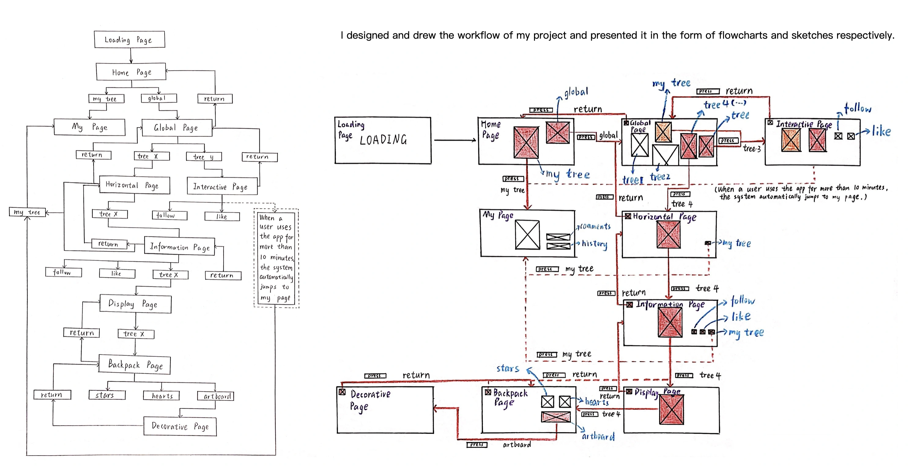
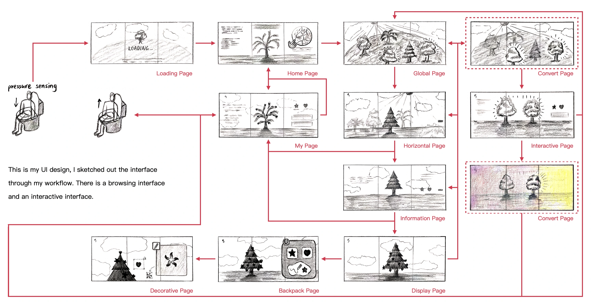
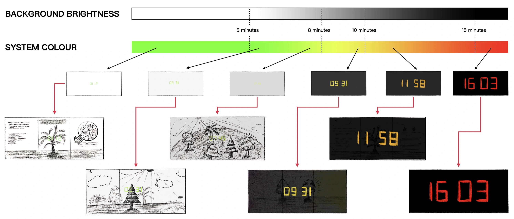
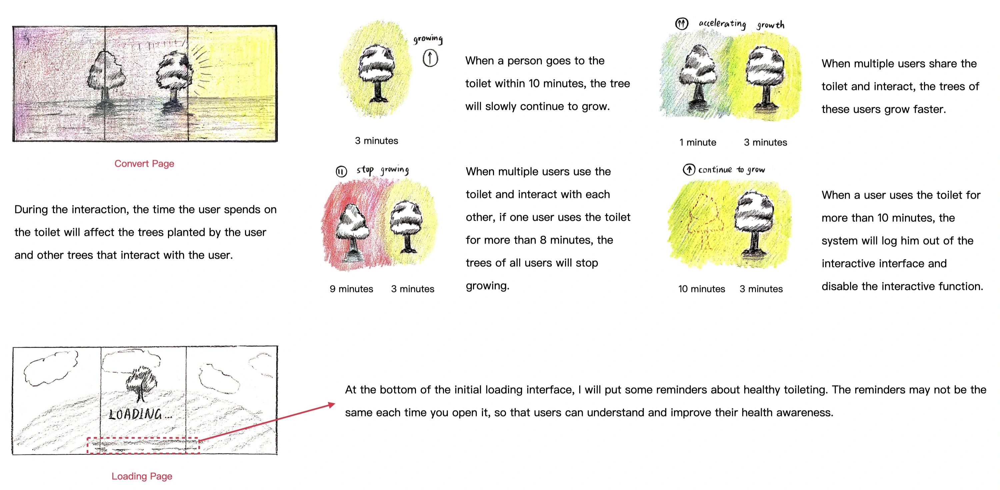

Back to work details
Workflow maps and navigation sketches Interface sketches and the user journey Background brightness, system colour and elapsed-time feedback Tree growth, shared interactions and session-ending rules
Back to work details
Sketches & process
Tempus Forestum Retreat
Workflow maps, interface sketches and feedback studies from the development of Tempus Forestum Retreat.



